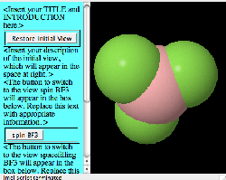

| Page Templates | Set Up |
| > Pop-In > Scriptbutton >>Description >>Page Cartoon >>Step-by-step |
> Path to Jmol > Jmol on your server > Testing locally (no server) |
The ScriptButton Template
This tab is
designed to produce
a web page that displays a single Jmol applet alongside a
scrolling pane
containing Jmol script buttons. The buttons change what is
displayed in the Jmol applet. What the buttons do is defined by setting
up
Jmol
with the view you want the user to see. You can add explanatory text
using a standard web editor. This panel can be opened once
and
returned to anytime. An example picture of such a page is shown below:

1) Set the relative path to the Jmol applet on your web site from where you will put the folder (directory) containing the files created by this program. (more...)
2) Put your name(s) in the Author space. This will add you as the author in the page meta data that is used for searching.
3) Add the title you want to appear in the browser window title bar. This does not have to be the same as the title you will use for the page.
4) Set the percentage of the window width that you want Jmol to occupy.
5) If not already done, open the first file you want to appear in your page using the File..Open.. menu in the Jmol viewer. If you will be using more than one model, open the models one at a time (occasionally you might need to use "load append" or the "append models" checkbox to allow displaying more than one model simultaneously), and follow steps (6) & (7) for each individual view.
6) Set the state of the model (zoom, rotate, select, change colors, add orbitals, set the molecule spinning, etc.)exactly the way you want it to appear on the web page.
7) Click on the "Add Present Jmol State as Instance" button.
8) Repeat for as many different displays as you wish. A button will be added to the web page that will create each display when the user clicks the button. You do not need to load a new file each time if you are just modifying the way the previous one is displayed.
9) When you are done, click on "Save HTML as..." Provide either the name of a new directory for this page or the name of the HTML file (.htm or .html) you want to create or replace. All necessary files will be created in the same directory. These include the HTML page itself, the JavaScript file JmolPopin.js, and three files for each view: a data file, a Jmol script, and a PNG image. If a new directory is indicated, the HTML file will be created in that directory and have the same name, with ".html" appended.
10) Open the HTML file in your favorite web editor and add your explanatory text and anything else you wish. As long as you do not alter the inside of the tables where Jmol and its buttons will be displayed, you should be able to change the page without disrupting the JavaScript that controls the behavior of Jmol.